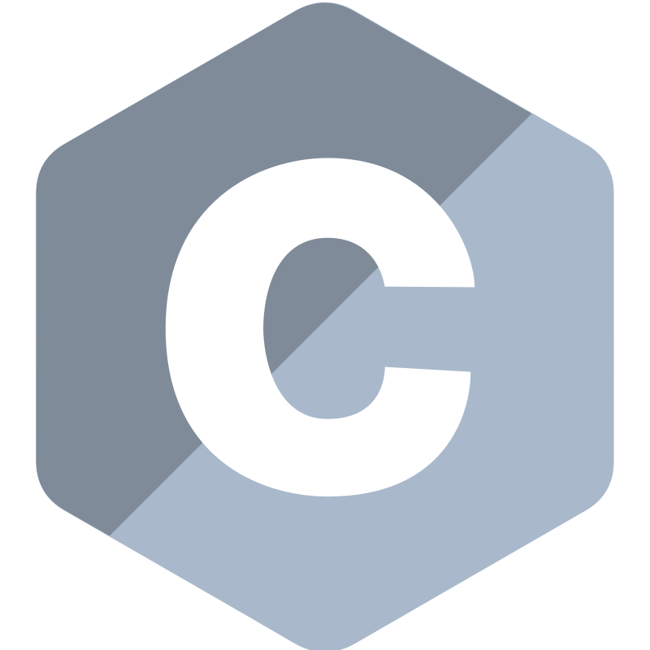

Ignacio Tomás Alvarez Gonzalez
Descargar CVIngeniero en Computación
Graduado con una sólida formación que abarca todo el ciclo de la tecnología: desde el desarrollo de software y la arquitectura de hardware de bajo nivel, hasta el diseño de redes complejas y la gestión de proyectos de TI. Mi perfil combina rigurosidad científica, capacidad analítica y una visión integral para resolver problemas de ingeniería.
Áreas de competencia e infraestructura:
- Desarrollo y Arquitectura de Software: Dominio de estructuras de datos, lógica algorítmica, ingeniería de software e introducción a la Inteligencia Artificial.
- Datos y Sistemas Operativos: Diseño, normalización y administración avanzada en Laboratorio de Bases de Datos, soportado por un fuerte entendimiento de Sistemas Operativos.
- Redes y Telecomunicaciones: Diseño y configuración de redes (LAN/WAN), arquitectura TCP/IP, protocolos de comunicación y procesamiento digital de señales.
- Sistemas Embebidos y Hardware: Programación y diseño lógico sobre sistemas con microprocesadores y microcontroladores.
Gestión y Metodologías: Capacitado para la Administración de Proyectos, Gestión de Tecnologías de la Información y liderazgo de equipos de trabajo.
Principales lenguajes y herramientas:



Experiencia y Soluciones de Ingeniería
Cuento con experiencia activa en la industria desarrollando y manteniendo sistemas empresariales complejos (ERP) y soluciones a medida. Me especializo en traducir requerimientos de negocio en arquitecturas de software limpias, escalables y documentadas bajo estándares UML.
Hitos y capacidades en el sector:
- Desarrollo Full Stack Integrado: Diseño completo de arquitecturas compuestas por APIs robustas en el backend y capas de presentación dinámicas.
- Optimización de Persistencia: Capacidad para analizar, refactorizar y mejorar el rendimiento de bases de datos relacionales mediante procedimientos almacenados complejos y consultas optimizadas.
- Integraciones de Terceros: Experiencia conectando sistemas con servicios externos críticos y APIs comerciales de alta demanda (pasarelas de pago, facturación electrónica y servicios de comunicación).
Metodologías y Calidad: Trabajo habitualmente bajo metodologías ágiles, aplicando patrones de diseño, control de versiones y un enfoque metódico basado en buenas prácticas de ingeniería.
Entornos y herramientas de producción:


Especialización y Stack Tecnológico
Para complementar mi carrera de grado, participo activamente en programas de formación intensiva de la industria. Esto me permite mantener un stack moderno, versátil y adaptado a las demandas tecnológicas actuales, destacándome en ecosistemas tanto corporativos como multiplataforma.
Ejes de formación y tecnología aplicada:
- Backend Corporativo Avanzado: Especialización en desarrollo empresarial utilizando el ecosistema Java/Spring Boot gracias al Bootcamp intensivo de Globant.
- Ecosistema Frontend Flexible: Experiencia aplicando Blazor en entornos de producción en relación de dependencia y Angular para el desarrollo de proyectos personales independientes.
- Desarrollo de Soluciones Interactivas y Calidad: Formación en diseño de aplicaciones móviles, desarrollo en Unity y fundamentos de testing automatizado para garantizar software confiable.
Idiomas: Inglés técnico (Nivel B1) fluido para lectura, documentación y comunicación profesional.
Tecnologías integradas:


 ignaciotalgz
ignaciotalgz